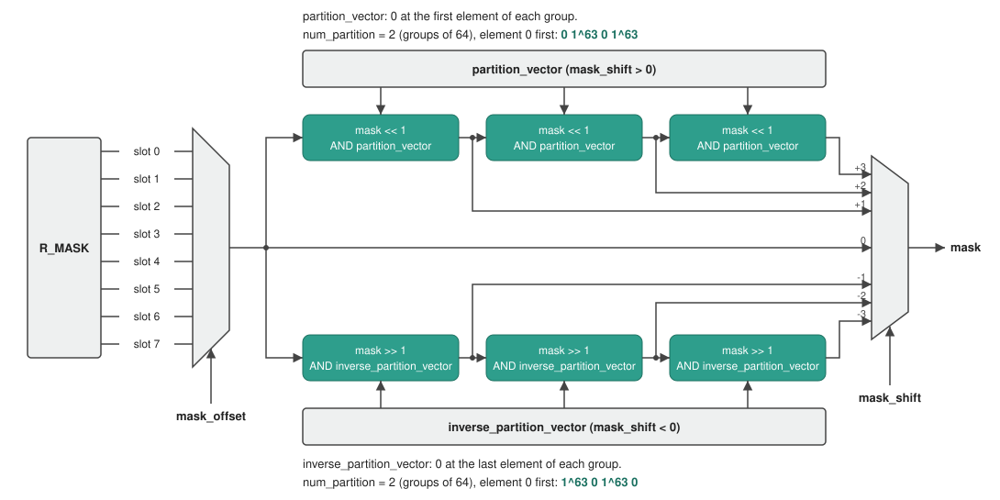

Multiply Stage¶
1. Overview¶
The MULT (Multiply) stage performs the following tasks:
- Dequantize: Converts each NX8 input element to FP32, with the format
from
quantizion_formatand the vector scale. - Multiply: Multiplies 128 pairs of FP32 elements. The operands come from
R0/R1,R_CYCLICor a scalar. Each product is an FP32 value. - Mask: Replaces the products of masked elements with a pad value. The mask
comes from
R_MASK. - Load: Owns the load instructions (
LDR_MULT_REG,LDR_CYCLIC_MULT_REG,LDR_MULT_MASK_REG). Writes the load data from XMEM into one of the stage registers:R0,R1, one slot ofR_CYCLICorR_MASK.
Table of Contents¶
- Overview
- Block Diagram
- Interfaces
- 3.1
dstructureLayout - 3.2 Element Format
- 3.2.1 NX8 to FP32
- 3.3 Operand Addressing
- 3.4 Element Masking
- 3.1
- Multiply ISA
- 4.1
NOP: No Operation - 4.2
LDR_MULT_REG: Load R0 or R1 - 4.3
LDR_CYCLIC_MULT_REG: Load an R_CYCLIC Slot - 4.4
LDR_MULT_MASK_REG: Load R_MASK - 4.5
MULT.RC.VV: R_CYCLIC Vector x Ra Vector - 4.6
MULT.RC.VE: R_CYCLIC Vector x Scalar - 4.7
MULT.RC.VS: R_CYCLIC Vector Square - 4.8
MULT.VE: Ra Vector x CR Scalar - 4.9
MULT.EE: Ra Element x CR Scalar, Broadcast
- 4.1
2. Block Diagram¶
block-beta
columns 11
space:6 INSTR["Instruction"] space FMT["quantizion_format"] space:2
block:INS:1
columns 1
LD_DATA["load data<br>128 x 8-bit<br>+ metadata"]
end
space
block:STAGE:7
columns 7
TITLE["MULT Stage"] space:6
space:2 RA["R0 / R1<br>2 x 128 x 8-bit"] space:4
LDW["Load<br>Registers"] space RC["R_CYCLIC<br>512 x 8-bit"] space SEL["Operand<br>Select"] space MUL["Multiply"]
space:7
space:2 RMASK["R_MASK<br>8 x 128-bit"] space:3 MASK["Mask"]
end
space
block:OUTS:1
columns 1
OUT_DATA["output data<br>MULT_RES<br>128 x 32-bit"]
end
LD_DATA --> LDW
LDW --> RA
LDW --> RC
LDW --> RMASK
RA --> SEL
RC --> SEL
INSTR --> SEL
FMT --> MUL
SEL --> MUL
MUL --> MASK
RMASK --> MASK
MASK --> OUT_DATA
classDef io fill:none,stroke:none
classDef blk fill:#2e9e8c,stroke:#1a7060,color:#fff
classDef title fill:none,stroke:none,font-weight:bold
class LD_DATA,INSTR,FMT,OUT_DATA,INS,OUTS io
class LDW,RA,RC,RMASK,SEL,MUL,MASK blk
class TITLE title
style STAGE fill:none,stroke:#888,stroke-width:2px3. Interfaces¶
| Name | Direction | Description |
|---|---|---|
| XMEM read address | Output | The XMEM row that a load instruction reads: offset + base. |
| load data | Input | One XMEM row: 128 8-bit elements (128 B) and the vector metadata (section 3.2.1). |
| Instruction | Input | The operation that the stage does on its registers. |
quantizion_format |
Input | The NX8 format of the input elements (section 3.2). |
| output data | Output | MULT_RES: 128 FP32 elements, to the ACC stage. |
Note: The stage reads
R0,R1,R_CYCLICandR_MASKas they were at the start of the cycle. A load into them in the same cycle is visible in the next cycle.
3.1 dstructure Layout¶
The cr_idx operand (dstructure_cr_idx in MULT.VE and MULT.EE) names a
32-bit CR that holds the data structure format of the 128-element vector. It
has four 8-bit fields:
| Bits | Field | Description |
|---|---|---|
[31:24] |
N/A |
Not used. |
[23:16] |
valid_partition |
Number of valid groups. The rightmost num_partition - valid_partition groups are masked. |
[15:8] |
num_partition |
Number of groups: 1, 2, 4 or 8. 1 means one line of 128 elements, 2 means two lines of 64 elements. |
[7:0] |
valid_elements |
Number of valid elements in a group. |
The stage also reads pad_mode, the value written into masked elements
(section 3.4):
pad_mode |
Pad value |
|---|---|
0 |
0 |
1 |
+inf |
2 |
-inf |
TBD: the bit position of
pad_modein thedstructureCR.TBD - ask Jacob: whether
pad_mode1and2can be used. They write+infand-inf, and FP32 elements are neverinfor-inf.
3.2 Element Format¶
Input elements are in the NX8 format. One format applies to all elements. Each
product (MULT_RES element) is FP32.
Each MULT instruction (except NOP) names the format in its
quantizion_format operand, a 32-bit CR. It has four 8-bit fields:
| Bits | Field | Description |
|---|---|---|
[31:24] |
N/A |
Not used. |
[23:16] |
sign |
0 = unsigned, 1 = signed. |
[15:8] |
nx_format |
Exponent format. 0 = dynamic, 1-7 = e1-e7 (fixed exponent width fe). |
[7:0] |
num_bits |
Total element width W: 1-8. 0 is reserved/invalid. |
3.2.1 NX8 to FP32¶
Every MULT instruction converts each NX8 input element to FP32 before it
multiplies. The conversion uses the element x (8 bits), the vector scale s
(8-bit e8m0) and the exponent width fe.
Exponent width fe:
nx_format |
fe |
|---|---|
1-7 |
The nx_format value. |
0 (dynamic) |
1 if dynamic_exponent = 0, 2 if dynamic_exponent = 1. Dynamic elements are signed and 8 bits wide. |
Fields. An element is packed from the high end as {S, Exp, M, 0-pad}:
fm = num_bits - fe - sign // mantissa bits
S = (sign == 1) ? x[7] : 0
Exp = x[7 - sign -: fe] // fe bits after S
M = x[7 - sign - fe -: fm] // fm bits after Exp, 0 when fm = 0
Emax = 2^fe - 1
Value:
if Exp < Emax: // direct
fp32 = (-1)^S x 2^(s - 127 - Exp) x (1 + M / 2^fm)
else: // clamp, Exp = Emax
fp32 = (-1)^S x 2^(s - 127 - (Emax - 1)) x (M / 2^fm)
TBD - ask Jacob: an NX8 element that is
NaN,infor-inf: which FP32 value does it convert to?
Vector metadata. Each vector is loaded and saved with its metadata:
| Metadata | Size | Description |
|---|---|---|
Scale (s) |
8 bits | Scale shared by the whole vector. |
dynamic_static |
1 bit | Dynamic or static quantization. |
dynamic_exponent |
1 bit | e1 or e2: the exponent width chosen in dynamic quantization. 0 in static quantization. |
R0, R1 and each 128-element slot of R_CYCLIC keep the metadata of the
vector loaded into them. Each element uses the metadata of the register or
slot that holds it.
3.3 Operand Addressing¶
| Operand source | Element j |
Range of j |
|---|---|---|
Ra |
R0[j] for j < 128, R1[j - 128] for j >= 128 |
0-255 |
R_CYCLIC |
R_CYCLIC[j] |
0-511 |
A vector operand is 128 consecutive elements from a start index: element i
of the operand is Ra[start + i] or R_CYCLIC[start + i].
3.4 Element Masking¶
Every multiply instruction masks its result. Bit i of a mask belongs to
element i. Elements whose mask bit is 1 keep their product; elements whose
bit is 0 get the pad value (pad_mode, section 3.1).
The mask is built in two steps:
mask_offsetselects one of the 8 slots ofR_MASK.mask_shiftshifts that slot mask by up to 3 elements. After each one-element shift, the mask is ANDed with a partition vector, so mask bits never cross a group boundary.

shift = clamp(mask_shift, -3, 3) // mask_shift is two's complement
mask = R_MASK.slot[mask_offset] // 128 bits
repeat |shift| times:
if shift > 0: mask = (mask << 1) & partition_vector // towards higher elements
if shift < 0: mask = (mask >> 1) & inverse_partition_vector // towards lower elements
for i in 0..127:
if mask[i] == 0: MULT_RES[i] = pad_value
Partitions. The 128 elements form num_partition partitions (groups) of
128 / num_partition elements (section 3.1). Partition p holds elements
p * (128 / num_partition) to (p + 1) * (128 / num_partition) - 1.
Partition vectors. Two 128-bit vectors mark the partition boundaries:
| Vector | Bits that are 0 |
Used by |
|---|---|---|
partition_vector |
The first element of each partition | mask_shift > 0 |
inverse_partition_vector |
The last element of each partition | mask_shift < 0 |
All other bits are 1. The vectors for each num_partition, element 0 first
(1^n is n ones):
num_partition |
Elements per partition | partition_vector |
inverse_partition_vector |
|---|---|---|---|
1 |
128 |
1^128 |
1^128 |
2 |
64 |
0 1^63 0 1^63 |
1^63 0 1^63 0 |
4 |
32 |
(0 1^31) x 4 |
(1^31 0) x 4 |
8 |
16 |
(0 1^15) x 8 |
(1^15 0) x 8 |
Note: After reset, every bit of
R_MASKis1: every element keeps its product.TBD - ask Aviv: the default value of
R_MASK.TBD - ask Aviv: do we add masking examples?
4. Multiply ISA¶
The MULT and LOAD slots are resolved by CTRL and forwarded down the pipeline. The stage does not read the CR/LR register files itself (see the Control Stage spec, section 5).
The opcode enum (mult_inst_opcode_t, package ipu_instr_pkg) is generated
from instruction_spec.py
by sv_package.py.
Note: Each
CR0-CR15andLR0-LR15register named in the instruction operands is 32 bits wide. AnLRoperand is read after this cycle's LR updates.
Instructions in this section:
| Instruction | Purpose |
|---|---|
NOP |
Do nothing. |
LDR_MULT_REG |
Load one XMEM row into R0 or R1. |
LDR_CYCLIC_MULT_REG |
Load one XMEM row into one slot of R_CYCLIC. |
LDR_MULT_MASK_REG |
Load one XMEM row into R_MASK. |
MULT.RC.VV |
R_CYCLIC vector x R0 or R1. |
MULT.RC.VE |
R_CYCLIC vector x a scalar from Ra or a CR. |
MULT.RC.VS |
R_CYCLIC vector x itself. |
MULT.VE |
Ra vector x a CR scalar. |
MULT.EE |
One Ra element x a CR scalar, broadcast to all 128 elements. |
In every MULT Operation below, x converts both NX8 operands to FP32 (section
3.2.1) and multiplies them. apply_mask is section 3.4.
4.1 NOP: No Operation¶
No operation for the MULT slot.
Syntax¶
Operands¶
None.
Example¶
4.2 LDR_MULT_REG: Load R0 or R1¶
Loads one XMEM row into R0 or R1, with its vector metadata.
Syntax¶
Operands¶
| Name | Type | Details |
|---|---|---|
dest |
Imm |
R0 or R1. The register that is written. |
offset |
LrIdx |
LR0-LR15. Row offset in XMEM. |
base |
CrIdx |
CR0-CR15. Base row in XMEM. |
Operation¶
Example¶
4.3 LDR_CYCLIC_MULT_REG: Load an R_CYCLIC Slot¶
Loads one XMEM row into one 128-element slot of R_CYCLIC, with its vector
metadata. The other slots keep their values.
Syntax¶
Operands¶
| Name | Type | Details |
|---|---|---|
offset |
LrIdx |
LR0-LR15. Row offset in XMEM. |
base |
CrIdx |
CR0-CR15. Base row in XMEM. |
index |
LrIdx |
LR0-LR15 whose value is 0, 128, 256 or 384. The first element of the written slot. |
Operation¶
Example¶
4.4 LDR_MULT_MASK_REG: Load R_MASK¶
Loads one XMEM row into R_MASK (8 slots of 128 bits, section 3.4).
Syntax¶
Operands¶
| Name | Type | Details |
|---|---|---|
offset |
LrIdx |
LR0-LR15. Row offset in XMEM. |
base |
CrIdx |
CR0-CR15. Base row in XMEM. |
Operation¶
Example¶
4.5 MULT.RC.VV: R_CYCLIC Vector x Ra Vector¶
Multiplies a 128-element window of R_CYCLIC by R0 or R1, element by
element.
Syntax¶
Operands¶
The Type column links to the operand type reference.
| Name | Type | Details |
|---|---|---|
rc_idx |
LrIdx |
LR0-LR15. Start element of the R_CYCLIC window (section 3.3). |
ra |
Imm |
R0 or R1. |
mask_offset |
Imm |
0-7. R_MASK slot (section 3.4). |
mask_shift |
LrIdx |
LR0-LR15. Mask shift, -3-+3 (section 3.4). |
cr_idx |
CrIdx |
CR0-CR15. Supplies num_partition and pad_mode (section 3.1). |
quantizion_format |
CrIdx |
CR0-CR15. Supplies the NX8 format of the input elements (section 3.2). |
Operation¶
for i in 0..127:
MULT_RES[i] = R_CYCLIC[rc_idx + i] x ra[i]
apply_mask(mask_offset, mask_shift, cr_idx)
Example¶
4.6 MULT.RC.VE: R_CYCLIC Vector x Scalar¶
Multiplies a 128-element window of R_CYCLIC by one scalar. The scalar is an
element of Ra or the low byte of a CR.
Syntax¶
Operands¶
The Type column links to the operand type reference.
| Name | Type | Details |
|---|---|---|
rc_idx |
LrIdx |
LR0-LR15. Start element of the R_CYCLIC window (section 3.3). |
src |
LcrIdx |
LR0-LR15 or CR0-CR15. An LR's value selects the scalar Ra[src]. A CR supplies the scalar in bits [7:0]. |
mask_offset |
Imm |
0-7. R_MASK slot (section 3.4). |
mask_shift |
LrIdx |
LR0-LR15. Mask shift, -3-+3 (section 3.4). |
cr_idx |
CrIdx |
CR0-CR15. Supplies num_partition and pad_mode (section 3.1). |
quantizion_format |
CrIdx |
CR0-CR15. Supplies the NX8 format of the input elements (section 3.2). |
Operation¶
scalar = (src is an LR) ? Ra[src] : src[7:0]
for i in 0..127:
MULT_RES[i] = R_CYCLIC[rc_idx + i] x scalar
apply_mask(mask_offset, mask_shift, cr_idx)
Example¶
4.7 MULT.RC.VS: R_CYCLIC Vector Square¶
Multiplies a 128-element window of R_CYCLIC by itself, element by element.
Syntax¶
Operands¶
The Type column links to the operand type reference.
| Name | Type | Details |
|---|---|---|
rc_idx |
LrIdx |
LR0-LR15. Start element of the R_CYCLIC window (section 3.3). |
mask_offset |
Imm |
0-7. R_MASK slot (section 3.4). |
mask_shift |
LrIdx |
LR0-LR15. Mask shift, -3-+3 (section 3.4). |
cr_idx |
CrIdx |
CR0-CR15. Supplies num_partition and pad_mode (section 3.1). |
quantizion_format |
CrIdx |
CR0-CR15. Supplies the NX8 format of the input elements (section 3.2). |
Operation¶
for i in 0..127:
element = R_CYCLIC[rc_idx + i]
MULT_RES[i] = element x element
apply_mask(mask_offset, mask_shift, cr_idx)
Example¶
4.8 MULT.VE: Ra Vector x CR Scalar¶
Multiplies a 128-element window of Ra by the low byte of a CR.
Syntax¶
Operands¶
The Type column links to the operand type reference.
| Name | Type | Details |
|---|---|---|
ra_idx |
LrIdx |
LR0-LR15. Start element of the Ra window (section 3.3). |
cr_idx |
CrIdx |
CR0-CR15. Supplies the scalar in bits [7:0]. |
mask_offset |
Imm |
0-7. R_MASK slot (section 3.4). |
mask_shift |
LrIdx |
LR0-LR15. Mask shift, -3-+3 (section 3.4). |
dstructure_cr_idx |
CrIdx |
CR0-CR15. Supplies num_partition and pad_mode (section 3.1). |
quantizion_format |
CrIdx |
CR0-CR15. Supplies the NX8 format of the input elements (section 3.2). |
Operation¶
for i in 0..127:
MULT_RES[i] = Ra[ra_idx + i] x cr_idx[7:0]
apply_mask(mask_offset, mask_shift, dstructure_cr_idx)
Example¶
4.9 MULT.EE: Ra Element x CR Scalar, Broadcast¶
Multiplies one element of Ra by the low byte of a CR and writes the
product to all 128 elements.
Syntax¶
Operands¶
The Type column links to the operand type reference.
| Name | Type | Details |
|---|---|---|
ra_idx |
LrIdx |
LR0-LR15. The Ra element, Ra[ra_idx] (section 3.3). |
cr_idx |
CrIdx |
CR0-CR15. Supplies the scalar in bits [7:0]. |
mask_offset |
Imm |
0-7. R_MASK slot (section 3.4). |
mask_shift |
LrIdx |
LR0-LR15. Mask shift, -3-+3 (section 3.4). |
dstructure_cr_idx |
CrIdx |
CR0-CR15. Supplies num_partition and pad_mode (section 3.1). |
quantizion_format |
CrIdx |
CR0-CR15. Supplies the NX8 format of the input elements (section 3.2). |
Operation¶
product = Ra[ra_idx] x cr_idx[7:0]
for i in 0..127:
MULT_RES[i] = product
apply_mask(mask_offset, mask_shift, dstructure_cr_idx)